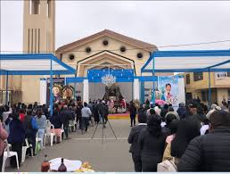
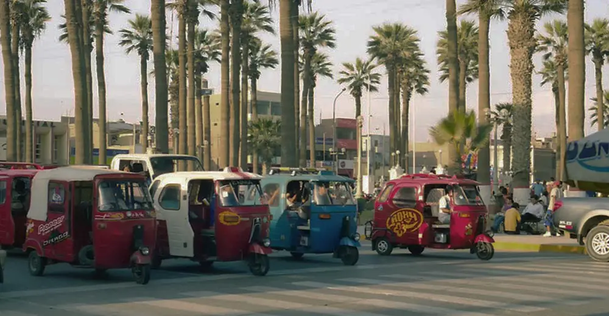
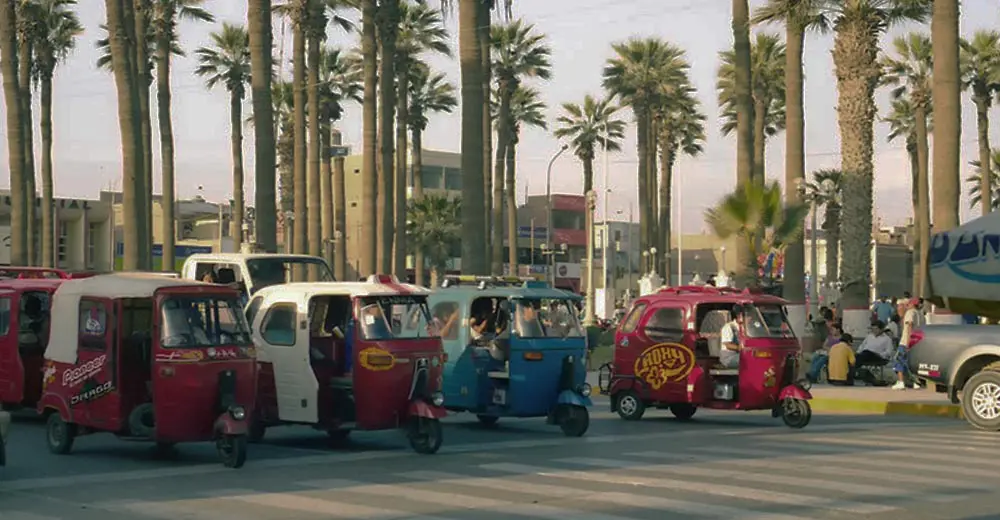

Bienvenidos a Grocio Prado
Grocio Prado es un encantador distrito ubicado en la provincia de Chincha, departamento de Ica, Perú. Conocido por su rica historia, tradiciones culturales y la calidez de su gente, Grocio Prado ofrece una experiencia única para los visitantes que buscan descubrir la autenticidad del Perú central.
Con una población de aproximadamente 25,000 habitantes, este distrito combina la tranquilidad de la vida rural con la energía de una comunidad en crecimiento. Sus calles empedradas, plazas coloniales y la imponente presencia de la cordillera de los Andes en el horizonte crean un escenario pintoresco que cautiva a todos los que lo visitan.
Historia
Época Pre-Inca
La región estuvo habitada por la cultura Chincha, conocida por su habilidad en el comercio marítimo y la agricultura.
Conquista Inca
Alrededor del siglo XV, el área fue incorporada al Imperio Inca, enriqueciendo su cultura y sistemas agrícolas.
Época Colonial
Con la llegada de los españoles, se establecieron haciendas y se introdujo el cultivo de la vid, base de la industria del pisco.
Fundación del Distrito
Grocio Prado fue oficialmente fundado el 2 de enero de 1857, como parte de la reorganización territorial del Perú republicano.
Siglo XX
El distrito experimentó un crecimiento significativo en agricultura y se convirtió en un importante centro de producción de algodón y uva.
Actualidad
Hoy, Grocio Prado es conocido por su producción agrícola, su rica gastronomía y como un destino turístico emergente en la región de Ica.
Lugares Turísticos Imperdibles
Plaza de Armas de Grocio Prado

La Plaza de Armas es el corazón de
La Plaza de Armas es el corazón de Grocio Prado, un espacio público vibrante que refleja la historia y la vida cotidiana del distrito. Rodeada de edificios coloniales y republicanos, la plaza es un punto de encuentro para locales y turistas. Su diseño incluye jardines bien cuidados, una fuente central y bancas que invitan al descanso y la contemplación.
Eventos importantes como el aniversario del distrito y festivales culturales se celebran aquí, convirtiendo la plaza en el escenario principal de la vida comunitaria. Los fines de semana, es común ver a familias disfrutando del aire libre y a vendedores ambulantes ofreciendo dulces y snacks típicos.
Iglesia Matriz de Grocio Prado
La Iglesia Matriz, dedicada a San Pedro, es un hermoso ejemplo de arquitectura colonial que data del siglo XVIII. Su fachada blanca y su torre son un hito visual en el paisaje urbano de Grocio Prado. El interior de la iglesia alberga valiosas obras de arte religioso, incluyendo pinturas de la Escuela Cusqueña y tallas en madera dorada.
La iglesia juega un papel central en las celebraciones religiosas del distrito, especialmente durante la Semana Santa y las fiestas patronales. Los visitantes pueden apreciar la belleza arquitectónica y la paz del recinto, así como participar en las misas dominicales para experimentar la devoción local.
Santuario de la Beata Melchorita
El Santuario de la Beata Melchorita es un importante centro de peregrinación dedicado a Melchora Saravia Tasayco, conocida como la "Santa de Grocio Prado". Nacida en 1897, Melchorita es venerada por su vida de servicio y los milagros atribuidos a su intercesión. El santuario, de arquitectura moderna, alberga sus reliquias y es visitado por miles de fieles cada año.
El complejo incluye jardines, una capilla y un museo que narra la vida y obra de Melchorita. Los devotos dejan velas, flores y placas de agradecimiento por los favores recibidos. La fiesta en honor a la Beata Melchorita, celebrada el 4 de diciembre, es uno de los eventos religiosos más importantes de la región, atrayendo a peregrinos de todo el Perú.
Gastronomía
Grocio Prado es un paraíso para los amantes de la comida, ofreciendo una mezcla única de sabores tradicionales peruanos con un toque local. Descubre algunos de los platos más emblemáticos de la región:
Carapulcra
La Carapulcra es un plato emblemático de la región, con raíces que se remontan a la época precolombina. Es un guiso a base de papa fresca, carne de cerdo y pollo, ají panca, maní y diversas especias.
Receta de Carapulcra:
- Aderezar los ajos bien dorados con manteca y con aceite.
- Luego hechar el aji panca asta que este bien cocido.
- Agregar el mani tostado junto con el comino seco
- Dejar dorar en el lapzo de una hora.
- Luego hechar el caldo de pollo.
- Agregar la papa picada y la sal al gusto y dejar conservar y servir con la sopa seca
Sopa Seca

La Sopa Seca es un plato tradicional de la costa sur del Perú, muy popular en Grocio Prado. A pesar de su nombre, no es una sopa, sino un plato de fideos secos cocinados con un aderezo de ají panca, cebolla, ajo y hierbas aromáticas.
Receta de Sopa Seca:
- Preparar un aderezo con ají panca, cebolla, ajo y hierbas.
- Tostar fideos largos en una olla.
- Agregar el aderezo a los fideos y mezclar bien.
- Añadir caldo de pollo o res y cocinar hasta que los fideos estén al dente.
- Agregar trozos de pollo o res cocidos.
- Servir caliente, acompañado de salsa criolla.
Chicharrón de Chancho
El Chicharrón de Chancho es un plato muy apreciado en Grocio Prado. Consiste en trozos de carne de cerdo fritos hasta que estén dorados y crujientes por fuera, pero jugosos por dentro.
Receta de Chicharrón de Chancho:
- Cortar la carne de cerdo en trozos grandes.
- Sazonar con sal, pimienta y comino.
- Cocinar la carne en agua con sal hasta que esté tierna.
- Escurrir y dejar secar.
- Freír en abundante aceite caliente hasta que esté dorado y crujiente.
- Servir con camote frito, maíz cancha y salsa criolla.
Pisco Sour

Aunque no es un plato, el Pisco Sour es la bebida nacional del Perú y muy popular en Grocio Prado. Este cóctel se prepara con pisco, jugo de limón, jarabe de goma, clara de huevo y hielo.
Receta de Pisco Sour:
- En una coctelera, agregar 3 onzas de pisco.
- Añadir 1 onza de jugo de limón fresco.
- Agregar 1 onza de jarabe de goma.
- Añadir 1 clara de huevo y hielo.
- Agitar vigorosamente por 12 segundos.
- Colar en una copa fría y decorar con gotas de amargo de Angostura.
Dónde Alojarse
Grocio Prado ofrece diversas opciones de alojamiento para todos los gustos y presupuestos. Aquí te presentamos algunos de los mejores lugares para hospedarte:
Hospedaje Cielo Azul
Ubicado en el corazón de Grocio Prado, el Hospedaje Cielo Azul ofrece habitaciones cómodas y limpias a precios accesibles. Con su ambiente familiar y atención personalizada, es perfecto para viajeros que buscan una experiencia auténtica.
- Habitaciones individuales y dobles
- Wifi gratuito
- Desayuno continental incluido
- Terraza con vista a la ciudad
Thiago Hospedaje
Thiago Hospedaje es conocido por su excelente relación calidad-precio. Ofrece habitaciones modernas y bien equipadas, ideal para viajeros de negocios y familias.
- Habitaciones con aire acondicionado
- Televisión por cable
- Restaurante en el sitio
- Servicio de lavandería
Hospedaje Faraón
El Hospedaje Faraón ofrece una experiencia única con su decoración inspirada en el antiguo Egipto. Es un lugar pintoresco y divertido, perfecto para aquellos que buscan algo diferente.
- Habitaciones temáticas
- Piscina al aire libre
- Bar y lounge
- Excursiones guiadas disponibles
Hotel Colpal
El Hotel Colpal es la opción de lujo en Grocio Prado. Con instalaciones de primera clase y un servicio excepcional, es ideal para aquellos que buscan una estadía más exclusiva.
- Suites espaciosas
- Spa y centro de bienestar
- Restaurante gourmet
- Salones para eventos y conferencias
Información Práctica
Cómo Llegar
Grocio Prado se encuentra a aproximadamente 200 km al sur de Lima. Puedes llegar en autobús desde la terminal terrestre de Lima (viaje de 3-4 horas) o alquilar un coche y conducir por la Panamericana Sur.
Mejor Época para Visitar
El clima en Grocio Prado es cálido y seco durante todo el año. Sin embargo, los meses de diciembre a abril son ideales para disfrutar de las playas cercanas.
Transporte Local
Dentro de Grocio Prado, puedes moverte fácilmente a pie o en mototaxi. Para visitar atracciones cercanas, considera alquilar un coche o unirte a un tour organizado.
 
